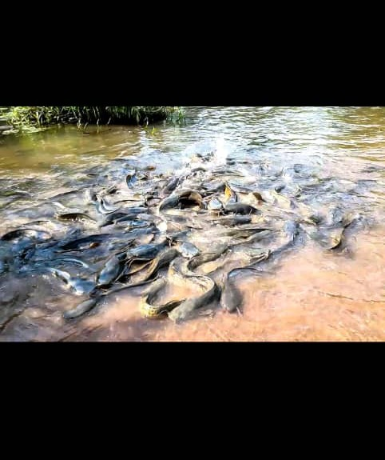

Les Silure Sacrés de Dafra
Description et Historique: Situé a quelques kilomètre de la ville de Bobo-Dioulasso, le Lac sacré de Dafra est non seleument une mare aux silures mais également un lieux de pelerinage renomée qui autrefois servais exclusivement aux rites traditionels. De nos jours le pelerinage se fait pour plusieurs raison:fortune,bien-être, santé,fertilité ect.Lieu unique,paisible doté d'un paysage environnant magnifique avec une ambiance particulière ,il est important de se faire accompagner par un guide qui connait bien les lieux.